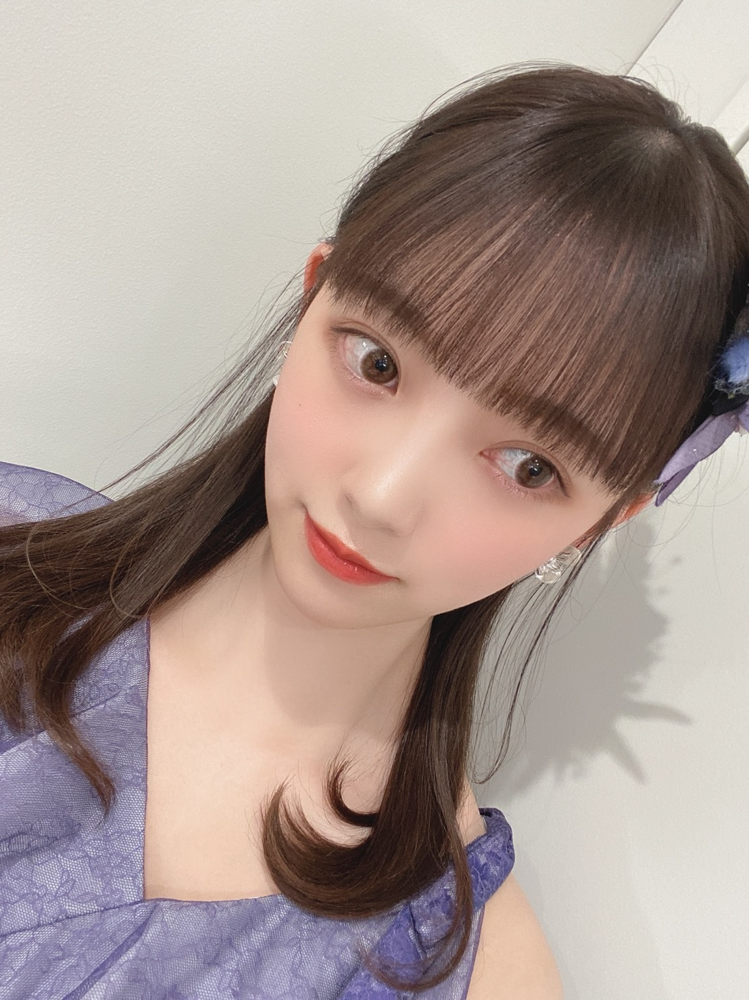

2020/0327Friかくれんぼには強いです
髪色抜けてきたので
そろそろ新しい色にしたいなーと思っています
迷うなぁ迷うなぁ


編み込みカチューシャヘア
気に入りました~
またしたいな~
The Vampsさん熱が最近また増して
よく聴いています
いい歌、いい声、いいMV!
最高です
ややハスキーで優しい歌声が
夕方とか朝は特に癒されますね☺︎


実は数年前から世界中の紅茶を集めていて
パリ、ニース、上海、ニューカレドニア、カリフォルニア、タイ、シンガポール、台湾の紅茶の茶葉がいまは集まっています。
他の国も気になるなぁ。

♡お知らせ♡
5/27発売
堀未央奈 2nd写真集の御予約はこちらから↓
■楽天ブックス①（楽天ブックス限定独占メイキング動画+ポストカード1種）
http://books.rakuten.co.jp/rb/16275200/
■楽天ブックス②（楽天ブックス限定アザーカバー＋ポストカード1種）
http://books.rakuten.co.jp/rb/16275199/
※上記ポストカードの絵柄は①②ともに同一のものとなります。
■セブンネットショッピング（セブンネット限定アザーカバー＋折り目ありB2サイズポスター1枚）
https://7net.omni7.jp/detail/1107083082
■HMV（HMV・loppi限定アザーカバー＋ポストカード1種）
https://www.hmv.co.jp/product/detail/10785595
■タワーレコード（クリアポストカード1種）
http://tower.jp/item/5038617
■乃木坂46 オフィシャルモバイルサイト（クリアファイル1種）
http://sp.nogizaka46.com/q?i=ec/11/lp_xjbe&m=official_wanibooks
※いずれも数に限りがありますので、無くなり次第終了となります。
■Amazon（特典なし）
https://www.amazon.co.jp/dp/4847082931
下記書店チェーンで購入すると、書店毎で別絵柄のポストカード特典が付きます。
(※特別付録の全8種ランダムのポストカードとは別特典となります）
■紀伊國屋書店（紀伊國屋書店限定ポストカード1種）
https://www.kinokuniya.co.jp/c/20200325000000.html
■TSUTAYA（TSUTAYA限定ポストカード1種）
https://tsutaya.tsite.jp/news/book01/i/41573605/
■丸善ジュンク堂書店（丸善ジュンク堂書店限定ポストカード1種）
https://honto.jp/store/news/detail_041000043498.html
■未来屋書店（未来屋書店限定ポストカード1種）
https://www.miraiyashoten.co.jp/news/hori_miona_2nd/
■くまざわ書店（くまざわ書店限定ポストカード1種）
https://www.kumabook.com/comic_tokuten/8022/
■コーチャンフォー（コーチャンフォー限定ポストカード1種）
https://www.coachandfour.ne.jp/original/
先着特典がいっぱいだぁー!
私らしさが詰まった1冊になっていますので是非✨
でははは
2020/03/27 20:18


コメント(293)
ストレートヘアいいですね。可愛いです。
写真集買いたいな。
可愛い( ￣▽￣)
SONYでした
写真集楽しみだね
カチューシャヘア可愛いですね。“ひめ”っぽさたっぷりで未央奈ちゃんにぴったり！
次の髪色も髪型も楽しみです。そして勿論、写真集も楽しみです！！一昨日のレコメンでも言ってたけど、発売日付近でぜひレコメンにゲスト出演して欲しいですね(笑)
何やら東京をはじめ全国、全世界的に大変な事態になってますが、くれぐれもお身体には気を付けながら、ぜひ僕らの心に灯りをともしてください。
いつもめっちゃ可愛くて癒される
写真集速攻で予約したよ！ 届くのが楽しみだ〜
未央奈の投稿いっつも楽しみにしてるよ！！
握手会とかLIVE絶対行くから待っててね〜
可愛いものですね。
レコメン最高でした！
写真集が待ちきれない！予約完了です！
これから、番組多くなるけど、体に気をつけてください。
セカンド写真集楽しみにしてます！
もちろん買う予定です！
紅茶！俺も好き！オススメ教えて！！
あつもりはどこまで進みましたかー？
報告待ってます
コロナで大変だと思いますが、頑張ってください。
編み込みカチューシャヘアかわいい
乃木中のツインテールもかわいかった
2nd写真集買うよ あとレコメンお疲れ様でした。
またラジオから声が聞きたいです。
髪型も髪色も衣装も大好きだよー
特典コンプリートなんて当たり前だよー
未央奈頑張ってー
編み込みカチューシャヘア素敵ですね
次はどんな髪色にするのかな～
楽しみです(^_^)/
ロシア産の紅茶も美味しいので
ご賞味してみてくださいな
微笑みの写真に癒されてます
今日も見つめられてるf(^_^)
週末、寒くなるみたいですけど
お身体に気をつけてね(^_^)
編みこみカチューシャめっちゃかわいい！！
ヘアアレンジ自分でやるの難しいからなかなか出来ない！
器用な手だったらなあ
写真集楽しみにしてるね！！！
写真集も発売まで待ちきれません
未央奈さんの編み込みカチューシャヘアがめっちゃ可愛いです！
世界中の紅茶を集めてるって凄くないですか！？紅茶って美味しいし、飲むと心が落ち着けるから好きなんですよね〜(好きな割には紅茶より炭酸系飲んでるやん。)
じゃあ、またブログ更新した時に〜……あっ、今度全国握手会行きます。
ﾊﾞｲﾊﾞｲ(ヾ(´・ω・｀)
ステルス機能を使えば･･･
あれ？ターコイズじゃないの？
え？紫？？（笑）
お～変わった髪型！いいですね～
紅茶ね。
ダージリン･･･午後ティーとかしか（笑）
今度、
「今日の紅茶」
シリーズの開催ですね。
たぶん
「へぇ～～」
って読みます（笑）
あ、なんか特典やらなにやらいっぱい出てきた！
あ、これ、混乱するやつや～（笑）
あ、ごめん。
今、リアルタイム一人芝居してました？（笑）
写真集楽しみにしてます！
編み込み可愛い
未央奈ちゃんは何でも似合うけどPremiumMusicのときの髪飾りがとても似合っててすごく可愛かったです！！衣装も似合ってました♡♡
編み込みカチューシャも可愛い！！写真集も楽しみにしてます！
髪色迷ってるんだね。僕は暗い髪色が好きだけど、色々な可愛い未央奈を見てみたいというのもあるから、どんな髪色も似合うだろうなあと楽しみ。
編み込みカチューシャって面白いね。新鮮だし可愛いし似合うしまた見たいな。頬に手を当ててるの可愛い。
未央奈はThe Vamps好きだね。ポップでオシャレな感じだよね。
未央奈新衣装似合う！この髪型も好き。
色々な国の紅茶集めてるんだね。さすがお茶好きの未央奈って感じ。紅茶って香りが良くて僕も好きだよ。
写真集まだ予約してなかった。早急に予約します。写真集楽しみだなあ。
では！
髪型と趣味素敵やね。次も待ってるよ(*￣∀￣*)~゜
めっちゃくっちゃ大好きだよ
めっちゃくっちゃ天使すぎるよ
レコメンお疲れ様でした。
たのしかったよぉ。
１枚目からお姫様感がでてるね。
写真集は、もう予約したよぉ。
写真集の設定がたまりませんね。
何でか、未央奈がずーと気になるよ。
好きだからかな。
でははは
編み込みカチューシャめっちゃ可愛い！！
握手会でやって欲しい！！！写真集の予約バッチリだよ！！
楽しみだな〜！！体調に気をつけてお仕事頑張ってね！！
それではまた！！
日にちも決まったしボチボチ予約しときますね！
周りの友達にも買うように促しとくのでまかして下さい！
レコメンお疲れ様でした！
乃木坂一年前にファンになって以来、レコメンのことを最近、知ったのが悔しいです。
もっと未央奈のラジオ聴きたかったのが正直な気持ちです。だけど、まゆたんのラジオも聞くしこれからのメンバーのテレビも見るからね！
風邪、コロナに気をつけて頑張って
宮脇書店って言うんだけど（笑）
日本最大の書店らしいけど・・知らない？
話は変わりますが！
おぉ～！編み込みヘアー！ ありがとう～！
やっぱカワイイ・・・、良く似合ってる。
カチューシャ風って初めて見ましたけど、とてもイイね
繰り返しちゃうけど、とても可愛い。
また気が向いたら色々試して見せて下さい。
お、ね、が、い・・・なんて（笑）
パープルの衣装にパープル？の髪飾りも可愛い。
いやホント可愛いを連発しちゃいますね。
出来れば、その髪飾りがちゃんと写った写真も見たい・・
アッシュが分からなくて調べたら、日本人の黒髪って
完全な真っ黒な人は少なくて、赤味（メラミン色素の
関係・・・肌の色と同じ）が基本？で、そこに色素の
他の要素、茶系や黒色の比率で黒さ具合が違ってくる
らしいです。 ・・・もう知ってたかな？
だからその比率の違いで黒色に見えたり栗色に見えたり
するらしいんだって。
絵の具の赤と青を混ぜると黒っぽいなるって言う補色
の様なものらしい。
アッシュの色は青紫色のカラーリング剤の色合いの
色んな組み合わせで個性の違った髪色が出来るんだそう
です。 大雑把な説明なので間違っている部分も多い
とは思うんだけど・・余り信用し過ぎないでください。
・・・詳しい事はヘアメイクさんに確認して下さいね。
で、アッシュ色は色落ちし易い染め色なんだってね。
色々なタイプを見たけどミントアッシュなんかイイ
感じがしました。この色も、もう知ってたかな？（笑）
なんにしろ黒髪らしさも残した色を選んでくれると
嬉しいかな。なんて（笑）
紅茶好きって言うのは、とても嬉しいですねぇ～。
自分は俄然紅茶派なのでコーヒーはまず頼みません。
アッサム、ダージリン、オレンジペコ、アールグレイ
と王道的なものしか飲んだ事がないので、そんなに
世界中に色々あるなんて知らなかった・・・
お気に入りの紅茶なんかまた教えて下さい。
メッチャ長くなったので終わります・・・
またの更新もお待ちしております。
それでは、では！ アハハ、ハ
衣装とっても可愛くて似合ってるよ！
編み込みカチューシャヘア可愛くて好き！
紅茶か〜！
お洒落だね！(^^)
僕も紅茶好きなので今度未央奈のおすすめの紅茶教えてね！
2nd写真集予約したよーー！
沢山特典もあってめっちゃいいね！
届くの楽しみだな〜！
全握延期になっちゃったけどお互い体調に気をつけて
頑張ろうね！
次のブログも楽しみに待ってるね！
紅茶ミルクティーとかレモンティーとかしか飲んだことないからストレートティー飲んでみたいなぁ
また握手会で会えるの楽しみにしてます
写真集も楽しみにしてるね～
編み込みカチューシャ、すっごくすっごく可愛いです♡
こんな大変なご時世、みおちゃんに癒されて頑張れてる！
いつもありがとう。
写真集はどこで予約しようかまだ悩んでます…。
全部予約しようかな…。
発売が待ち遠しい！！
編み込みカチューシャヘア可愛いね‼
未央奈ちゃんの髪色はやっぱり暗色系が一番好きかも～♪
でも何でも似合うと思う。
写真集、絶対買うね！
楽しみにしてるよ( •ω•ฅ♡
握手会、コロナでどうなるか分からないけれど行きたい！
未央奈ちゃんに会いたい……(切実)
歌番組などのお仕事が多いと思うけれど頑張ってね!!!!!
応援してるよ❗
いつも楽しみにしてます！
編み込みカチューシャヘア
とっっても可愛いです(●´ω`●)
お姫様みたい〜！笑
中学生なので金欠で写真集
買えそうにないけど陰ながら
応援してます(*´罒`*)♥ﾆﾋﾋ
大好きです！！
またして欲しい！
紅茶集めてるんだ
オススメの国の紅茶知りたいなぁ
今度、教えてください！
先行カットやオフショットの公開も楽しみです
コメントする